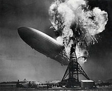

Formation

In 1966, London-based session guitarist Jimmy Page joined the blues-influenced rock band the Yardbirds to replace bassist Paul Samwell-Smith.
Page soon switched from bass to lead guitar, creating a dual lead guitar line-up with Jeff Beck.
Following Beck's departure in October 1966, the Yardbirds, tired from constant touring and recording, began to wind down.
Page wanted to form a supergroup with him and Beck on guitars, and the Who's Keith Moon and John Entwistle on drums and bass, respectively.
Vocalists Steve Winwood and Steve Marriott were also considered for the project.
The group never formed, although Page, Beck, and Moon did record a song together in 1966, "Beck's Bolero", in a session that also included bassist-keyboardist John Paul Jones.